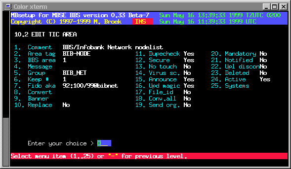

Last update 08-Jun-2001
MBSE BBS Setup - File Echo's Setup - TIC Areas.
Introduction.
In this setup you can define the File Echo's or TIC areas. Files received or send from this areas are bound together with a *.tic file with information about the file and where to store that file. Each file echo must belong to a group, in this grouprecord is the information about costsharing and some other details. When a file is received at your system you can do several things with that file before it is stored in your download areas such as; scanning the file for virusses, extracting the FILE_ID.DIZ file to use as description, allow update of magic alias, convert to another compression format, replace the file archive comment with an add of your own bbs and limit the number of files (nodelists).
TIC Area Setup.
Comment A description for this area. Area tag The tag for this area. BBS area The BBS download area number, 0 means passthru. Message Not in use yet. Group The group where this area belongs to. Keep # The number of files to keep, the name must match. Fido aka The Fidonet aka to use for this area. Convert The archiver to convert to, leave blank for none. Banner The bannerfile (in ~/etc) to replace in the archive. Replace Honor the "Replace" command in the .tic file. Dupecheck Check for duplicates in this area. Secure Check if the sending system is connected. No touch Don't touch the filedate, keep it original. Virus sc. Try to scan for virusses. Announce Files may be announced in this area. Upd magic Allow update magic request name. File_id Try to use the FILE_ID.DIZ file for description. Conv.all Convert archive even if it is already right. Send org. Send original received file instead of the file from the BBS. Mandatory Downlinks can't disconnect from this area. Notified Not in use yet. Upl discon Not in use yet. Deleted If this area must be deleted. Active If this area is active. Systems To the screen with connected systems.

Global Commands.
From menu 10.2 you can enter the global commands menu. In this menu you can:
- Delete connection
- Add new connection
- Replace connection
- Change connection status
- Change aka to use
- Delete TIC area
 Back to File Echo's Setup
Back to File Echo's Setup